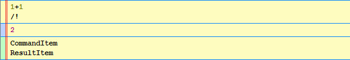
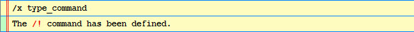
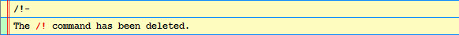
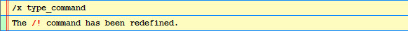
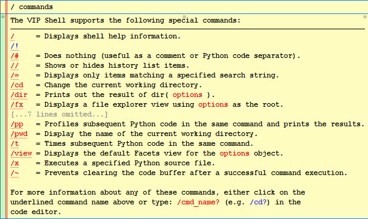
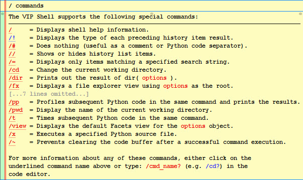
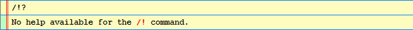
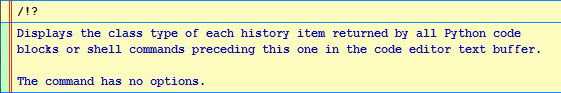

Since the source code for the VIP Shell is included, enterprising developers are free to extend it in whatever way they want. However, in this section we will be covering three specific, architected ways of extending the shell:
A shell command is an action that can be executed directly from the code editor that extends the capabilities of the shell in some useful way. You create a shell command by defining a new Python class that derives from the ShellCommand base class and registering that class with the shell.
Let’s start with a simple example:
from facets.ui.vip_shell.commands.api import ShellCommand
class TypeCommand ( ShellCommand ):
def execute ( self ):
for item in self.items:
print item.__class__.__name__
__.shell.register( '!', TypeCommand )
The purpose of this command is to display the history item type of each result returned by all Python code blocks or shell commands executed prior to this command in the same code editor execution. To see what we mean by this, let’s try executing the following:
1+1
/!
which should display:
The last block in this figure is the output from our command, indicating that the 1+1 Python expression preceding it returned two history items: a CommandItem instance used to represent the Python expression (and our /! command), and a ResultItem object representing the result of evaluating the `1+1` expression (i.e. 2).
Now let’s go back to our command definition and provide some comments about how the code works:
We create the command by defining TypeCommand as a subclass of ShellCommand.
The __.shell.register( '!', TypeCommand ) statement registers our command with the shell under the name !. Since we know this code is executed within a VIP Shell instance, we use the __ shell variable to get access to the shell’s register method, which takes the name of the command and the class implementing the command as arguments.
Also note that the name the command is registered under can be any string which does not contain a blank and which is not the name of one of the shell’s built-in commands.
The command’s logic is provided by the execute method, which all commands should override. This method has no arguments. The reason is that all the information the command needs to operate is provided as part of the command’s state. This is illustrated in the example by the self.items reference, which provides the list of history items returned by all previously executed commands.
Because we entered and executed the command definition directly within the shell itself, the command is not automatically persisted across shell sessions. To create a persistent definition we need to save the definition to a file and then execute the file from the shell.
For example, if we save the TypeCommand definition to a file called type_command.py, we can create a permanent command for it by executing:
/x type_command
which should display the following result:
If you now exit and restart your shell session, you’ll find that the /! command is already defined. Remember that you can always unregister any command you’ve previously defined using the - modifier. For example:
/!-
which should display:
If you need to change the definition of a command, simply update its definition file and re-execute it from the shell as shown previously. This time you’ll get a message indicating that the command has been redefined:
One nice feature of the shell’s command system is that any shell commands you add are automatically integrated into the shell’s help system:
The /! command we defined is shown in blue to indicate that it is a user- defined command. You’ll note that it does not have a helpful command summary displayed next to its name like the other commands do. In order to support this feature, we need to define a value for the command’s summary facet. For example:
class TypeCommand ( ShellCommand ):
summary = 'Displays the type of each preceding history item result.'
def execute ( self ):
...
Having made and executed this change, we should now see:
This looks good, but if we click on the /! link, we see the following message:
In order to provide the full-length help for the command we either need to:
Setting the help facet is the easiest solution in the case where the help text is a constant. Overriding the show_help method works better in cases where the help text is dynamic, depending upon other values in the command object’s state, such as the name the command was invoked with or the options provided with the command.
In this case, we’ll set the help facet in the TypeCommand class definition:
TypeHelp = """
Displays the class type of each history item returned by all Python code
blocks or shell commands preceding this one in the code editor text buffer.
The command has no options.
"""[1:-1]
class TypeCommand ( ShellCommand ):
summary = 'Displays the type of each preceding history item result.'
help = TypeHelp
def execute ( self ):
...
Now when we click on the link for the /! command in the help commands list we get the following result:
Nice! So now you’ve seen how with just a few lines of code you can create your own custom shell command fully integrated with the shell’s built-in help system.
As we mentioned previously, a shell command’s execute method is not passed any arguments because all information it needs is available from its object state. The following list describes the state elements in more detail:
A string you provide containing the full description of what the command does. The value is used when the user requests help for the command, either by clicking on the command’s link in the help command list, or by executing the command with the ? suffix (e.g. /!?).
This value is returned by the default implementation of the show_help method.
An enumerated value you provide which describes what type of options data the command accepts. The possible values are:
Setting the correct value for the options type makes your command more user friendly when the user is typing it in the shell’s code editor. The default value is none, meaning that the shell does not provide any special user assistance for the command when the user presses the Ctrl-Tab key.
A string containing the name the command was invoked with. This value is set by the shell prior to calling execute. This value is useful in cases where you register your command under more than one name, since it allows you to use the command name to specify additional information about the operation to be performed.
For example, the built-in p and pp commands both reference the same shell command class, which uses the command name to determine whether the profiler results should be displayed in the shell or not.
The ShellCommand class also defines two methods you might need to override:
Called when the command is executed. It has no arguments, but can return several different result types:
The string is converted to an OutputItem history item and appended to the results for the code editor command the shell command is part of.
Note that the string can contain substrings wrapped in [[...]] (for emphasis) or <<...>> (for examples). For example:
return ("Result: [[%s]]" % result)
The callable is invoked after all Python code blocks and other shell commands in the same code editor command have been executed. This can be useful for commands which need to perform post-processing after all other commands have executed. For example, the lod command uses this feature to adjust the level of detail setting for all command history items, even the ones executed following the lod command. In effect, it allows you to divide your command into a pre-processing phase performed when execute is called, and a post-processing phase performed when the callback is called.
The callback receives no arguments and the value it returns is processed like the result of the execute method, except that the result cannot be another callback.
Called when the command is executed with the ? help request suffix. It has no arguments and should return a text string containing the full help description for the command. The default implementation simply returns the value of the help facet.
Note that the string can contain substrings wrapped in [[...]] (for emphasis) or <<...>> (for examples). For example: “Hello, [[world]]!”.
The ShellCommand class also has several helper methods you can use:
Used for evaluating Python expressions in the shell’s context. It accepts an optional string argument containing the Python expression to evaluate. If the argument is omitted, the command’s options string is evaluated instead.
The Python expression is evaluated using the shell’s current local variables. If the expression evaluates successfully, the result of the evaluation is returned as the result. Otherwise a SyntaxError is raised indicating that the command’s options string could not be evaluated.